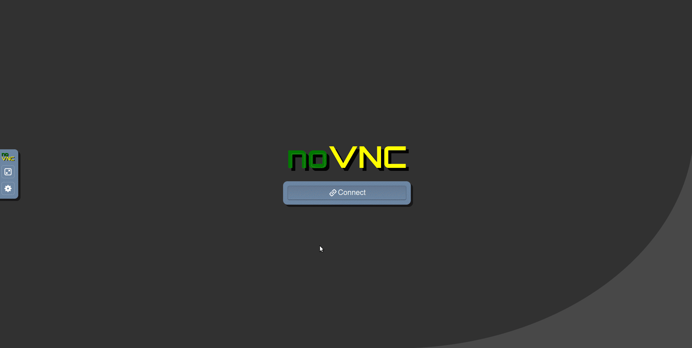

Installation en utilisant docker. C’est la plus simple et qui marche sur windows, mac et linux.
Dans la salle de cours, docker est déjà installé sur les machines linux. Si vous êtes sur votre propre machine, suivez les instructions ci-dessous pour installer docker.
Comment installer Docker sur votre machine si besoin ?
Quand vous avez fini votre session de travail, vous devez fermer le docker proprement en utilisant CTRL+C dans le terminal où le script a été lancé.
Le script est codé de telle sorte que si vous ne pouvez pas avoir votre répertoire de travail (workspace) persistant (c’est-à-dire que docker ne peut pas monter lier un dossier à l’intérieur de votre répertoire HOME à un volume docker), un workspace temporaire sera créé dans /tmp/rl/mujoco/workspace. Quand vous fermer la session docker avec CTRL+C, alors le script fera automatiquement une sauvegarde de ce workspace temporaire dans le dossier que vous avez indiqué dans la variable d’environnement BACKUP_TARGET_DIR (par défaut $HOME/rl/docker_snapshots/mujoco_snapshots).
Cette configuration n’est pas idéale, mais elle se rencontre fréquemment sur des machines de l’école ou de l’université et en entreprise où les droits d’accès du daemon docker sont limités.
Dans ce cas lorsque vous souhaitez reprendre votre travail, il vous suffira de restaurer votre workspace en décompressant la dernière sauvegarde faite dans le dossier $HOME/rl/docker_snapshots/mujoco_snapshots dans le dossier /tmp/rl/mujoco/workspace.
Si vous avez un doute sur le type de workspace que vous utilisez (temporaire ou persistant), vous pouvez vérifier dans le terminal où le script a été lancé, au début de la session docker, un message vous indique quel type de workspace est utilisé.
exemple avec un workspace temporaire (à sauvegarder manuellement à la fin de la session):
dockerrun-it--rm--namemujoco-student\--shm-size=4g\-p6080:6080\-p8888:8888\-v/tmp/rl/mujoco/workspace:/home/student/workspace\-eHOST_UID=$(id-u)\-eHOST_GID=$(id-g)\-eHOST_WORKSPACE_INFO="Temporary: /tmp/rl/mujoco (will have to be backed up on exit)"\-eUSE_TEMP_WORKSPACE="true"\-eBACKUP_TARGET_DIR="$HOME/rl/docker_snapshots/mujoco_snapshots"\-eVNC_RESOLUTION=1920x1080\-eVNC_DEPTH=24\-eVNC_DPI=96\-eNOVNC_PORT=6080\-eVNC_PORT=5901\-eDISPLAY=:1\-eLIBGL_ALWAYS_SOFTWARE=1\-eMUJOCO_GL=osmesa\yguel/mujoco-desktop:v1.0
dans ce cas n’oubliez pas de sauvegarder votre workspace à la fin de la session en utilisant le scriptdesauvegardeautomatique:
./save_rl_env.sh
Note importante, ces instructions n’ont pas été testées, elles sont fournies à titre indicatif.
Merci de me faire un retour si vous les testez et rencontrez des problèmes ou au contraire si tout fonctionne bien.
Dans la suite il faut remplacer <VotreNom> par votre nom d’utilisateur windows.
Avec docker desktop installé, ouvrez une fenêtre powershell et créez un dossier pour stocker les fichiers du cours:
mkdir$HOME\rl\mujoco
Si vous n’avez pas d’accélération matérielle NVIDIA, lancer l’image docker manuellement en liant le dossier créé précédemment, en alouant les ports pour jupyter et noVNC, et alouant suffisamment de mémoire (ici 4Go, mais ne mettez pas plus de la moitié de la mémoire totale de votre machine):
Si vous avez une carte graphique NVIDIA compatible avec l’accélération matérielle dans docker, vous pouvez lancer l’image docker avec les options supplémentaires suivantes (à ajouter avant le nom de l’image yguel/mujoco-desktop:v1.0):
Dans une autre fenêtre de navigateur, ouvrez l’URL suivante: http://localhost:8888. Vous devriez voir une interface jupyter.
Dans une autre fenêtre de navigateur, ouvrez l’URL suivante: http://localhost:6080. Vous devriez voir une fenêtre NO VNC, vous n’avez plus qu’à cliquer pour vous connecter et vous devriez voir un bureau linux comme sur la Figure 1 ci-dessous:

Figure 1 Interface graphique utilisant un navigateur pour interagir avec le docker yguel/mujoco-desktop:v1.0 sous ubuntu avec noVNC.
Dans cette dernière fenêtre, vous pouvez maintenant ouvrir un terminal et exécuter les vérifications suivantes.